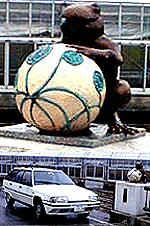
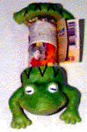
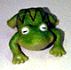
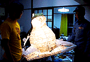
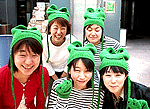

|
 新潟県の村でカエル橋発見！【新潟発しらい同志記者】そろそろ田植えのシーズン！米どころ新潟の守門村でカエル橋を発見しました。橋の名前は『かえる橋』と書いてありました。ニコニコ顔で抱きかかえている玉っころには、山菜が描かれています。カエルの合唱を聴きながら頭をなでなですれば、気分はもうカエル人。。。。 【全国かえる奉賛会】山菜の玉とたわむれるカエル。素晴らしい橋がひっそりと米どころで建設されているなんて素晴らしいぞ。カエルを大切にする村の米はきっと、ばつぐんのおいしさに違いない。カエル橋という素朴な橋の名前もステキだー。 ガマガエル色なので、夜間に雨の日などは、橋の欄干にカエルが立っている姿がリアリティーを持って写るであろう。
守門村のみなさん。カエルを末永く大切にしてくれーっ。村は繁栄し、米は毎年豊作間違いなしだあああああああ。
イタリアにカエル胴体分断ラムネ菓子！ 【横浜発横浜のつがえる同志記者】以前カエルチュッパチャプスが紹介されてましたが、これは会社の先輩がイタリア土産にとやはりイタリアはローマで買てきたお菓子です。真ん中のお菓子を食べると上半身と下半身が合体してカエルになります。ヨーロッパの人ってこのようなものが好きなのでしょうか？中はラムネ菓子でした。切れ長の目が妙に印象的なカエルです。
 【全国かえる奉賛会】平成12年2月20日号で紹介したカエル菓子もイタリア製だった。イタリア人ってカエルが好きなんであろうか。日本のカエルメーカーであれば、きっと可愛いカエルの全身の内部を空洞にして、ラムネを入れるに違いない。しかし、イタリア人はあくまでもカエルの胴体を分断してラムネ部分の筒を作りたかったのであろう。
そっちのほうがデザイン的に優れているということなのであろうかあ。かつての同盟国の考えることは素晴らしいぞー(笑)
かえるサボテン完売！モロー君も在庫僅少！【けろテン市場】けろテン市場で、発売開始した『かえるサボテン』第二期分譲はすでに完売しました。『モロー君』第五期分譲も残りわずかです！申し込みは先着順なので、イマスグにでかけてみましょーっ
福岡かえる展準備進む！かえる大明神出現！カエルガール隊も行動！ 【福岡かえる展２事務局発表】かえる展会場に展示する『ねぶた式かえる大明神１型』は、モロー寺井師邸でその全容を明らかにしつつある。針金の骨格に和紙を貼り付け、次第に明らかになってきた姿は、まるでゴジラのような迫力である。
 また、広報活動強化週間の今週は、マスコミへの広報行動にカエルガール隊が組織され、取材相手をカエル化しながら、カエルとともに歩む人生の素晴らしさを宣伝している。詳しくは、連日更新している公式ホームページを読もう！ 福岡かえる展『カエル買い物袋展』への作品募集【福岡かえる展２事務局発表】買い物袋に貼り付けるカエル絵を募集しています。応募作品は、製作実費を払うだけで、プリント出しした上で布製の買い物袋に縫いつけて、作品として福岡かえる展の会場に展示し、会期終了後は作者にお届けします。たくさんの応募を待っています。詳しくは、連日更新している公式ホームページを読もう！ ミスドがカエルキャラでキャンペーン！【日本発=kei-f同志記者】今度ミスタードーナッツのキャンペーンにはカエルキャラがでてきます!!「雨だって、おでかけ」として、カエルグッズがゲットできるようです!!!詳しくはこちらをみましょう。うぬぬ、カエラーならば全部欲しいですな〜。ドーナッツ三昧な日々になるかも
【全国かえる奉賛会】ドーナツを人にあげてもいいので全種類ゲットしたいものであるー。
梅雨を前にカエル本の出版相次ぐ！【日本発=kei-f同志記者】先日、ピーマン村の絵本シリーズの最新刊、『かえってきたカエル』という本を発見いたしました。紹介文に「梅雨どき、雨の季節にピッタリのカエルをめぐるゆかいな絵本。」とあるように、これからの季節に合いまくりです。まだ、手に取ってみてませんが、きっとかわいらしい愛すべきカエルの絵本だと思います。 他にも木製のアヒルのおもちゃを好きになったカエルの絵本があるという話を聞きました。なごみ系の話で、大人が読むのにもよいそうです。これからも続々カエルの絵本が刊行されるのを期待している今日この頃です。
訪問９９９９９人目に記念品贈呈！【全国かえる奉賛会】９９９９９人目の訪問者に、記念品を贈呈するぞー。該当者は、大王様へのメールwakuro-3@hf.rim.or.jpで自己申告してくれー。福岡かえる展２のＭＬを開設！【福岡かえる展２事務局】福岡かえる展２の実行委員会用のメーリングリストを開設しました。公式ホームページの他に、実行委員会メンバーが情報交換する場所です。もちろん最新の情報は、昨年同様に、できるかぎりすべて、公式ホームページで公開します。メーリングリストで、その準備段階から体験したいというカエラーは、参加していただいてかまいません！参加申し込みは、ここからも自分でできるからねーっ！ 投稿採用者に武功カエル徽章を授与！ |
かえる古新聞過去に取り上げた記事を見出し付きで一覧したい人は、ここをクリック◆創刊号を見る◆先週号を見る◆話題の号を見る◆かえる新聞の昔を読む
|
私も入っています。。全国かえる奉賛会
大王様に会うには、このバナーをクリック。ずっと奥に写真館があるぞ。全国かえる奉賛会に入会するには、自分のホームページのどこかに、下の部分を追加するとバナーがリンク付きで表示されるぞ。どんどん入会しましょー |


|